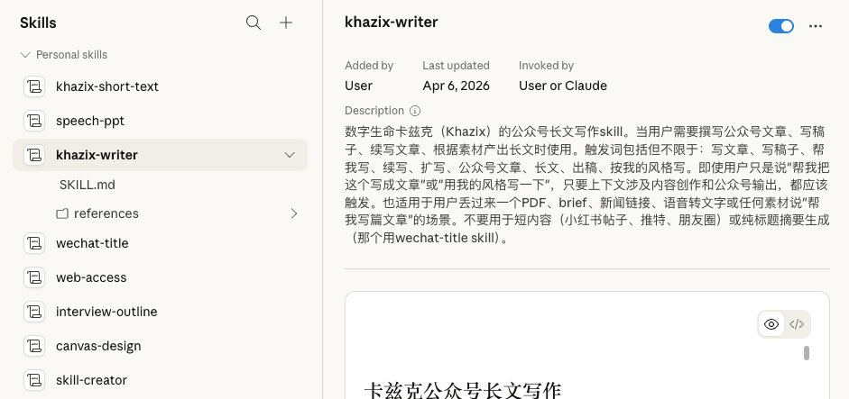
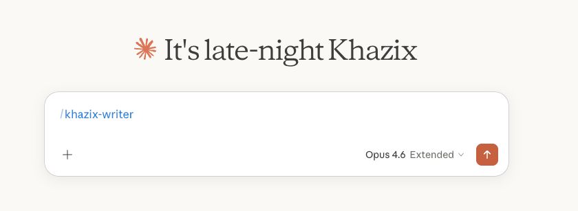
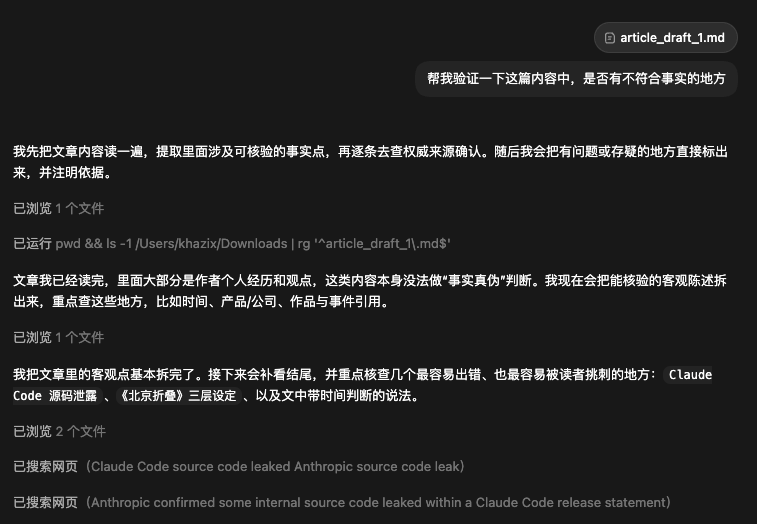
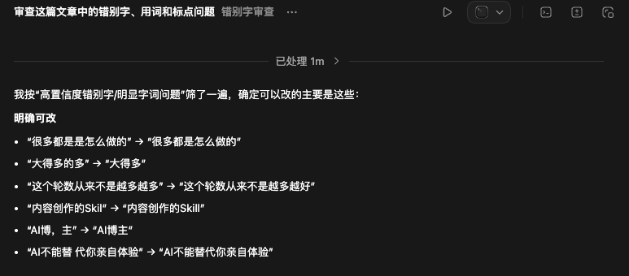
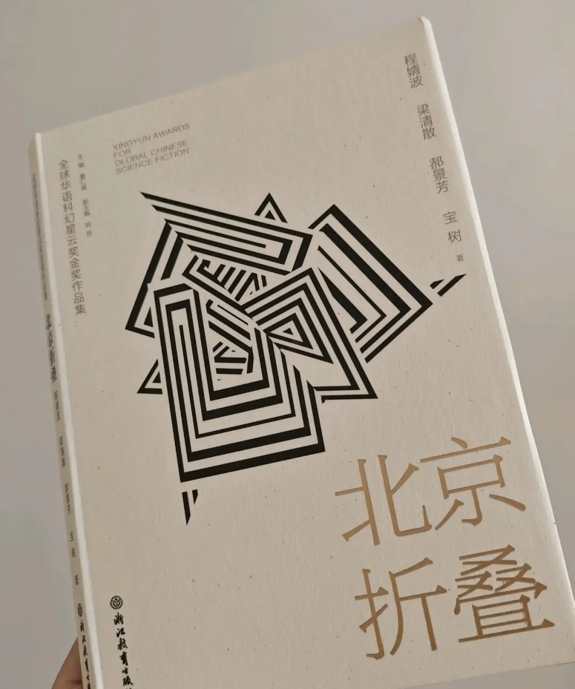

卡兹克开源创作 Skill：构建迭代方法论 + AI辅助创作边界 + 四层自检体系
来源：微信公众号 归档日期：2026-04-07 抓取状态：成功 原文字符：8946｜配图：6 张
摘要速览
大部分人做创作 Skill 的方法是把文章丢给 AI 总结风格就直接用，但产出总是"差那么一点意思"。这篇文章给出了完整的解法：怎么构建、怎么迭代、AI 在哪些环节该用不该用、以及怎么检验产出质量。
核心内容
一、创作 Skill 的构建与迭代
- AI 总结的风格 ≠ 你的风格：AI 从文章里提取的特征是它理解的你，不是真实的你，这个 gap 比想象的大得多
- 四步迭代循环：初版 Skill → AI 按 Skill 写稿 → 你自己重写/大改 → 把两版同时丢给 AI 分析差异并迭代回 Skill，重复 3-4 轮趋近稳定
- 3-4 轮就够：搞 10-20 轮会过拟合，反而限制 AI 创意发散。AI 产出能 70-80% 可用就很好了，剩下的必须自己动手
- 开源参考：卡兹克把三年公众号方法论蒸馏的 khazix-writer Skill 开源在 github.com/KKKKhazix/khazix-skills
二、AI 辅助创作的正确边界
AI 做不了的：实测内容、教程内容（必须亲身体验），核心创意角度，真实情绪表达
AI 能加速的三个环节：
- 找证据写观点：让 AI 遍历 5 个佐证案例 + 5 个反驳案例，自己挑选。"AI 帮我找的是弹药，但开枪的方向是我选的"
- 找类比和比喻：没灵感时让 AI 生成候选，自己筛选改写
- 确定框架后的扩写：方向角度框架全定好，AI 在骨架上填肉
凌晨 2:30 的故事：写淘宝 9.9 元 DeepSeek 文章后半段卡文，AI 给的角度全是"割韭菜""技术普惠"这种平庸切入。最终抬头看到书架上《北京折叠》，灵感爆发——信息差让空间被折叠成三层。这种跨领域概念嫁接是 AI 无法复现的"神之一手"
三、四层自检体系
- L1 硬性规则扫描：禁用词、禁用标点、结构性套话，出现就改，没有例外
- L2 风格一致性检查：开头是否从具体场景切入、长短句交替、口语化程度、一句话独立成段的断裂效果
- L3 内容质量检查：观点有没有场景支撑、知识用聊天感表达、从具体事件连接更大的文化参照物
- L4 活人感终审（最重要）：读完觉得是有见识的普通人在聊天，还是 AI 在输出信息？AI 味重就返工
灵感来源：类比 Anthropic 的代码质量评估体系——Claude Code 质量稳定的核心不是 AI 写得好，而是检测/评估体系牛逼
四、工具链
- 创作效果排名：Claude Chat + Opus 4.6 > Cowork + Opus 4.6 > Claude Code + Opus 4.6 > Claude Code + k2.5
- 幻觉检测：Codex + GPT-5.4 或 ChatGPT GPT-5.4 Thinking 模式（精准性远超其他模型）
可执行启发
（待补充）
我的想法
（待补充——可以思考：1. 我自己的公众号/小红书风格能不能用四步迭代法做一个 Skill？先找出 3 篇最满意的内容试试 2. "活人感终审"和 Anthropic 代码质量体系的类比很有洞察——不是生成能力决定质量上限，而是检测/评估能力决定质量下限 3. AI 在"确定性高的执行"上很强，但在"不确定性高的创意决策"上依然是人类的领地）
为什么有用
这是目前看到的最完整的"创作者如何正确使用 AI"方法论：从 Skill 怎么建、AI 在哪些环节提效、到产出怎么检验质量，形成了闭环。特别是"必须自己动手改一遍再让 AI 对比差异"和"5 佐证 + 5 反驳"这两个方法，可以直接拿来用。
适用 / 不适用场景
- 适用：有一定创作积累、想让 AI 辅助但保持个人风格的创作者
- 适用：构建自己的创作 Skill、写观点文/分析文时找素材
- 不适用：完全没有创作经验的新手（先写起来比做 Skill 更重要）
- 不适用：想靠 Skill 全自动出稿不动手的人
原文沉淀
目录
故事是这样的。
最近各种把同事、把前任、把各种知识蒸馏成Skill的东西特别火。
然后我也陆陆续续看到，有人把所谓的我的写作风格，做成了Skill，我看了两三个，其实大概就是把我的内容都灌了进去，然后总结了一下风格，就跟之前其实很多的所谓的卡兹克写作风格Prompt差不太多。
但是坦诚的讲，我觉得一个内容创作的Skill他不应该是这样，我自己其实也有一个真正的用来辅助我做内容创作的Skill，这个我其实不太避讳。

因为这年头，一个AI博主如果说自己没有任何AI辅助的成分，那其实是不可能的，也说明这个博主没有自己的品味和审美，更不怎么会用AI。
当然，这个我在文章后半段也会详细的说，Skill辅助我自己内容创作的流程，到底是怎么用的。
坦诚的讲，这个Skill我前前后后磨了很久。
里面有我写文章的风格规则，什么样的角度切入是我的风格，什么词和标点我绝对不用，一般开头怎么切入，节奏怎么控会比较好，怎么分享才不会显得登味很重。
还有我自己总结的方法论，什么好内容，什么样的类型大概是什么样的节奏，一些技巧和手法是什么样的，里面还有一套我定义的四层自检体系，从硬性规则扫描到风格一致性检查到内容质量审查，最后一层是最重要的，叫活人感终审。
说真的，这个Skill，就是我把自己做了三年公众号的所有方法论、所有踩过的坑、所有我觉得就得这么写才是我的感觉，全部蒸馏成了一个Skill。
我的方法论，全都在里面了。
而且真的迭代了其实很多版，甚至在迭代的过程中，还总结了我自己的创作类Skill的迭代流程，我自己私心觉得，这玩意还是有一些价值的，甚至之前我觉得，就是我的一个命根子。
但是现在，我的思维会有一些变化了。
这是一个互联网开源精神回归的时代，这是我觉得，最棒的时代。
我们见到无数人、无数大佬，好像回到了30年前那互联网精神最本质的时代，每个人都在无私分享，把自己的方法、把自己的经验总结成Skill，分享出来。
以一灯传至诸灯，终至万灯皆明。
那我，也想给这个时代贡献一份自己的力量，现在好像没啥人会真正的分享自己的内容创作方法论。
那就不如，我来吧。
我觉得，作为一个创作者，特别是一个AI领域的内容创作者，我还是有一点话语权的。
所以今天，我决定把我自己在用的内容创作Skill，完整的，一字不改的，开源了。
开源地址：https://github.com/KKKKhazix/khazix-skills
khazix-writer那个Skill就是。
这个地址大家感兴趣的也可以star一下，后面也会不定时的把一些我觉得自己做的还不错的Skill，比如迭代文档和记忆的、比如取标题的、比如做PPT的等等等等，都打磨到一个还是比较好用的版本以后，给大家分享出来。
安装方法很简单，直接跟你的Agent说：
-
帮我安装这个skill：https://github.com/KKKKhazix/khazix-skills然后，你的Agent就会自动帮你装好了。
你只要想清楚你的观点和选题，然后说你要写个啥，Agent自动就会帮你开始写了，然后会自动搜索内容，写出内容，根据自检手册，再来调整和优化内容。
产出内容我就不放了，大家自己去试试就好。
这里我自己用的个人觉得产出效果最好的，是Claude的Chat模式，对，不是Cowork或者Claude Code，是Chat模式+Claude Opus 4.6。
在Chat模式里面，其实也是可以调用Skill的。

其次是Cowork+Opus 4.6，再其次是Claude Code+Opus 4.6，再其次是Claude Code+k2.5，其他的我基本就用的很少了，大家可以自己去试试。
需要注意的是，Claude Opus 4.6产出的内容，很多都有幻觉，但同时幻觉又是创意的前提，所以我一般不会在Skill里面强行的抑制幻觉，而是把AI生成的内容，扔给Codex+GPT-5.4，来检测是否含有事实不符的地方。

如果你不用Codex，用ChatGPT也可以，记得开启GPT-5.4的Thinking模式，GPT-5.4的幻觉率，真的非常的低，低的可怕。
我觉得精准性上远超其他的所有的模型。
用法大概就是这样，但是我非常的不推荐你拿到手就直接用，因为那只会让你模仿我，但是永远不会超越我。
所以，这篇文章的后半部分，我还想再聊两个我觉得是更核心的内容。
也是更重要的、也更偏严肃一点的话题。
- 如何构建和迭代你自己的创作Skill。
- AI到底应该如何正确的辅助你的创作。
如果说，我的卡兹克风格创作Skill是鱼的话，那后面这两个话题，我觉得就是渔。
也是我觉得真正核心和有用的部分。
希望对大家真的有用，我也非常推荐大家看完，可能会有点长，但，一个一个来说吧。
一. 如何构建和迭代你自己的创作Skill
首先我想说明的一个事，就是其实很多人对Skill有误解。
Skill，或者说一个做创作的Skill，从来都不是一次成型的。
你自己有新知识、有新的成长，Skill理论上需要跟着你一起迭代这种东西我就不说了。
而是就单纯的构建一个创作Skill，我觉得也从来不应该一次成型的。
你可以回想一下你看过的市面上那些XX内容生成Skill，想一想很多都是怎么做的。
其实大部分人的做法是，把你发过的内容、视频脚本、文章啥的丢给AI，让它总结你的风格特征，然后蒸馏成所谓的一个Skill。
但它有一个致命的问题。
就是AI总结出来的，是它认为的你的风格，而并不是你实际的风格。这两个东西之间的gap，其实远比你想象的要大得多的多。
所以我自己迭代Skill的做法，其实会稍微有一点点不一样。
第一步，我还是会跟之前一样，扔两三篇我自己觉得比较有代表性的文章进去，还有我自己的曾经给内部写的方法论白皮书，然后总结成一个所谓的卡兹克创作Skill，这个第一步，其实完全没有变化。
第二步，让AI按照当前版本的Skill，根据你详细的要求、Prompt、还有给过去的素材，直接帮你写一篇文章，这一篇说真的，几乎不可能发出去，因为它一定有很多地方，读起来你会觉得，嗯，好像哪哪都差那么一点意思。
第三步，自己动手改，你可以把AI生成的这篇稿子当做参考，在这之上，直接重写一篇都行，只要保证主题是一致的，你想表达的观点是一致的。你一定一定要动手改。
第四步，把AI生成的版本和我重写的版本，同时丢回给AI，让它自己分析这两个版本之间的差异。哪些地方它写得太正经了，哪些地方它用了我绝对不会用的词，哪些地方它的节奏太平了，再把这些差异迭代回Skill里。
然后，重复以上第二步到第四步的步骤，重复3～4轮。
你这个创作的Skill，终于趋近于稳定了，它终于知道你想要的风格是什么样的了，它终于逐渐的，磨平了你们中间的GAP了。
然后这块我有个建议，就是这个轮数从来不是越多越好，我自己经验和体感下来，其实建议3～4轮左右就差不多了，不需要搞个10～20轮，那样会容易过拟合，反而限制AI在一些思维上的发散和创新。
而且你要不要指望AI能帮你直接写出一篇100%可以用的内容，永远不要相信，他能生成一个70～80%我能直接可用的，我都觉得今天是上天善心大发了。
因为就连你自己，在不同的时间点，不同的情绪状态下，写出来的东西都是不一样的，都是有那个情绪表达在的，你没办法要求AI比你自己还稳定，那样，活人感反而没有了。
这个就是如何构建和迭代你自己的内容创作Skill的核心。
然后我想强调的Skill里面另一个非常重要的东西，叫做自检系统。
前两天Claude Code源代码泄露的事情大家肯定都知道了，当时很多人都在聊，哇Anthropic自己也用AI写代码写的真牛逼，里面有那么多可以学习的，哇Claude Code有这么新功能。
但是我跟朋友聊的过程中，我们其实比较惊讶的点在于，Anthropic是如何能做到AI产出的代码质量这么稳定的，我们其实一致觉得，Anthropic那套代码的质量评估体系还有测试系统，才是真正的最牛逼的。
这个牛逼的程度，是OpenAI现在都还完全没有赶得上的，从产品的迭代速度就能看出来了。
这个思路，其实跟我们做内容创作的Skill是有异曲同工之妙的。
所以我在我的Skill里面，也搞了一套四层自检体系。
第一层是硬性规则扫描。像代码的语法检查一样，检查有没有用禁用词、有没有用禁用标点、有没有出现结构性套话，这些是最基础的，出现了就一定有问题。
第二层是风格一致性检查。开头是不是从具体场景切入的，节奏有没有长短句交替，口语化表达够不够，有没有那种一句话独立成段的断裂效果。
第三层是内容质量检查。每个观点有没有具体的场景支撑，知识是不是聊天感的方式出来的，有没有从具体事件连接到更大的文化参照物。
第四层是活人感终审。这一层最主观，也最重要。就一个核心问题，读完这篇文章，你觉得这是一个有见识的普通人在认真跟你聊一件打动他的事，还是一个AI在给你输出信息？
如果任何一段读起来感觉AI味重了，就需要返工。
大概就是这样。
构建+自检+迭代，就是我觉得一个正确的Skill的构建流程。
你当然可以把我的卡兹克创作Skill拿去用，但是我觉得这样其实能帮你完成一些事情，但并不能百尺竿头更进一步。
我非常推荐大家基于这个Skill的底子，去构建你们自己内容创作Skill。
一千个人用这套方法，能做出一千个不同的Skill，服务于一千种不同的内容风格。
这才是我最想看到的盛况。
**二. AI到底应该如何正确的辅助你的创作 **
接下来我想聊一个更敏感的话题。
就是，我到底怎么用AI辅助我做内容创作的。
去年，我在代表《流浪地球3》的AI团队接受外部媒体采访的时候，我曾经表达过一个组内的观点和共识，就是在球3的时候，我们有一个原则就是，AI内容不进成片，但是在成片之前，有大量的工业化的体系，是我们在用AI去进行辅助加速生产的。
但是，那毕竟是《流浪地球3》，是中国电影工业体系的巅峰，是科幻电影的桂冠，AI，还远远达不到剧组的要求。
但是回到我自己身上，我就是一个写文章的，AI写的东西，一丁点都达不到人类的要求？
鬼特么才信。
坦率的讲，都2026年了，一个公众号上写AI内容的AI博主说自己完全不用AI辅助内容创作，你信吗？
但我还是想把这个事情说清楚。
首先我想表达的是，AI辅助创作，是在你的创作流程中，有很多环节和类型，是AI可以加速进去提效的，从来不是说，你扔一个话题进去，AI就能直出帮你写完全文，这个想都不要想，除非你对内容没有一点要求，或者完全不在乎你的读者和观众的阅读体验，那你可以这么干，但是我自己只能说，极度不推荐，这会让你自己在内容创作能力上变废掉。
用AI辅助创作，和直接让AI替你写完内容，是完完全全不同的两件事，这个是理解我下面所有内容的前提。
这块我也说一下之前我文章错别字的问题，很多人都在说我是AI生成刻意再改错几个字冒充人类，我只能说我有病我才会这么做，我这辈子最接受不了的就是造假和欺骗，AI生成改错别字冒充人类欺骗读者，这种行为在我这就是绝对的触碰底线了，是我觉对不可能接受的。
所以其实之前的错别字，都是因为我比较懒，写完的东西我真很不想检查一遍只想赶紧发了，所以才会漏了一些错别字在里面。
但是我也深刻反思了，我觉得这样不好，所以我现在都会用Agent帮我过一遍错别字审查。。。

所以最近一个月，大家应该会看到，我的错别字几乎销声匿迹了。。。
话说回来，说回到AI辅助创作这块来。
我先说什么东西是我绝对没办法用AI来做的。
那就是，实测内容和教程内容。
这个大家肯定都能理解，你要写一篇新模型或者新工具或者新功能的体验和评测，你得自己去用，自己去体验，自己去踩坑。
甚至我们经常是首发，连网上的参考都找不到一点，只能完全自己来，所以这种内容，是AI完全做不了的，AI不能替代你亲自体验，也不能替代最终判断。
这些内容，AI基本辅助不了一丁点。
但是内容创作中，有几个流程，是我经常会使用AI辅助我来进行加速的。
分别是找证据写观点、写类比和比喻、确定了角度和框架之后的扩写。
这也是我现在用的最多的用法。
先说第一个，找证据写观点。
比如说，根据某个事件，我写了一个观点，我觉得这个观点是对的，但我想找到一些过去的历史事件、学术研究、或者文化现象来佐证它。
在以前，我可能需要翻大量的资料，或者纯靠自己的阅读积累来硬顶。
但现在，我会让AI帮我找。
我的做法一般是这样，让AI给我遍历能证明我这个观点的五个案例，以及能反驳我这个观点的五个案例。
然后我自己来判断，挑出最合适的，揉进我的文章里。
你说这个过程用了AI辅助吗？当然用了。
但最后文章里的观点是谁的？是我的。
AI帮我找的是弹药，但开枪的方向是我选的。
千万不要丢了自己判断的能力。
第二个，找类比和比喻。
这个比较好理解，有时候我脑子里已经有一个特别好的比喻了，那我就直接把我写好的部分扔给AI，让它按这个比喻的方向来续写。
但有的时候确实没灵感，那我就让AI根据我想表达的意思，帮我生成几个比喻或者类比的候选。
有的候选特别烂，一眼就能看出来是AI的那种比喻。
有的还不错，能给我一些启发。
最终用哪个，怎么改，还是我会自己来。
然后最后，就是确定了角度和框架之后的扩写。
这个我想举一个非常真实的例子，是我自己之前写的，一个我自己非常非常喜欢的文章：淘宝上卖9块9的DeepSeek，让我看到了被折叠的魔幻世界。
我到现在还记得，当时我写到凌晨1点的时候，前半部分已经写完了。
前半部分是纯粹的我们自己的经历，下单买DeepSeek、收到了几个免费网址的链接、一脸懵逼的去看评论区、看到那句“不用买会员了也”的时候鼻子一酸。
这些东西你知道的，几乎不可能用AI的，因为全部是我自己的体验，我自己在那个瞬间真实的情绪反应。
但到了后半部分，我卡文了，不知道该怎么写了。
我想表达的核心主旨是有的，就是想表达一下信息差，但是实在不知道用什么角度切入，我真的没有想好。
当时又很晚了，于是我让AI帮我写了一些后半段的角度切入。
但没有一版是我满意的。
真的，大家可以自己去试试，你一旦让AI聊信息差这种话题，它就变得过拟合到极点。出来的那些角度，我闭着眼睛都能猜到它会怎么切入，什么割韭菜是不对的，什么我们应该技术普惠，真的很没有意思。
太普通了，太正确了，正确到没有任何信息增量。
说真的，后来凌晨2点半了，我真的想不出来，甚至已经准备放弃，第二天不发了。
然后我抬头看了一眼书架。
看到了那本《北京折叠》。

北京折叠，被折叠成了三层。
在这个时代，信息差，让我们的空间，让我们的信息，也被折叠成了三层。
那一秒钟，我感觉角度有了。
第一空间，信息的创造者和定义者。第二空间，信息的追随者和消费者。第三空间，信息的隔绝者。
我把观点和三层空间写好之后，我丢给了AI，让它按我定的角度去扩写每一层的内容。
它扩写得非常快，质量也挺好。因为方向、框架、角度全部已经确定了，AI只需要在这个骨架上填肉就行了。
后面我就直接改吧改吧用上了，大概3点半，那篇稿子最终定稿了。
这个凌晨2点半的故事，就是我想说的一切。
AI能帮你做的事情，是在你定好方向之后，极大地加速你的产出。
AI做不到的事情，是那个凌晨2点半，你抬头看书架的那一秒钟。
那一秒钟，是你在一个特定的空间里，一个特定的疲惫状态下，目光偶然扫过一本书的书脊，然后大脑里突然产生了一个跨领域的概念嫁接。从一个淘宝9.9元的商品，跳到了一本科幻小说里的社会分层。
这个东西，我至今没有任何Prompt能复现。
我把它称为，独属于人类的。
神之一手。
写在最后
所以回到那个很多人可能会关心的问题。
既然你有一个写作Skill，那你以前的文章是不是都是AI写的？
我觉得，如果你认真看完了我上面讲的这些，你自己心里应该已经有答案了。
但我还是想把话说得更直接一点。
“这篇文章是不是人写的”，在2026年的今天，我真心觉得它已经是一个过时的问题了。
今天任何一个创作者，如果他说自己100%纯人工创作，不用任何AI辅助，要么他在说谎，要么他在跟时代较劲。
查资料你会用AI，找灵感你会用AI，校对你会用AI，甚至你做封面图都可能用AI，我们的创作流程中，有大量的AI辅助在里面。
AI已经像空气一样渗透到了创作的每一个环节里了。
这个时代，真正值得问的问题，并不是“是不是人写的”。
而是，这个内容背后，到底有没有一个真实的人在做判断，有没有一个人，在做真实的情感表达。
有没有一个人，在凌晨2点半实在想不出角度的时候，没有凑合着用AI那个平庸的版本，而是选择抬头看了一眼书架。
有没有一个人，在AI给出五个候选类比的时候，说不对，这些都太普通了，然后自己去想。
有没有一个人，在看到淘宝评论区那句“不用买会员了也”的时候，是真的鼻子一酸，说我一定要为他们发声，而不是在表演鼻子一酸。
这些判断、这些选择、这些真实的情绪反应，是任何AI、任何Skill都没办法生成的。
也是我觉得，我把这个Skill开源之后，任何人拿着它都复刻不了的。
我依然还是我。
这是属于卡兹克的印记，这也是我的灵魂。
我开源了这个Skill，我也不希望大家去模仿我，而是可以在这之上，去构建一个新的“你”。
最后。
给自己打个广告，我自己办的万人的AIFUT大会，在明天，终于就要开幕了。
详情可以参考这篇文章：2026，我们倾尽所有，想为大家办一场万人AI大会丨AIFUT。
4月8号和9号。
我们，线下见。
一起来看看，我觉得，AI时代，可以解惑的内容。
****以上，既然看到这里了，如果觉得不错，随手点个赞、在看、转发三连吧，如果想第一时间收到推送，也可以给我个星标⭐～谢谢你看我的文章，我们，下次再见。****
/ 作者：卡兹克
/ 投稿或爆料，请联系邮箱：wzglyay@virxact.com
归属：[[02-输入/按主题/写作与创作/_index|写作与创作]]